Listed below are some of my favorite songs, their composers, and how they make me feel. It might take me a few days to find my passion and properly articulate why I put these songs here. Thank you for your patience.
| Window | Play Widget | Song Name / Composer / Album |
|---|---|---|
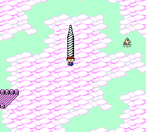 |
"Magicant" / Hirokazu Tanaka / MOTHER | |
| Younger me loved this song. I tried to play it on piano, but it didn't come out quite right. Later, when I learned sheet music, I printer this song out as soon as I could. Hearing its melancholic tones ring out from the piano, a real, non-digital instrument instrument in front of me, was magical. | ||
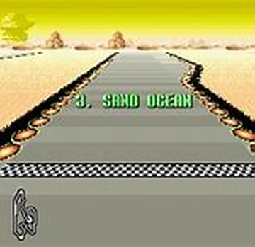 |
"Sand Ocean" / Naoto Ishida / F-ZERO | |
| F-Zero's a very Tactical racing game. It was clearly designed for people who take hobbies too seriously, and the music reflects this. The 5/4 time signature is hard to wrap your head around on the first listen, like the windy, twisty, dangerous Sand Ocean roads. | ||
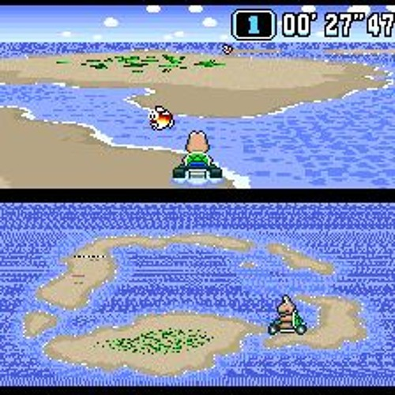 |
"Koopa Beach" / Soyo Oka / SUPER MARIO KART | |
| This song is really cute, and so is a lot of Mario music. Soyo Oka does a little trick where it contrasts with a sad section. I know I mention contrasting minor sections a lot, but I can't help myself. I like a balanced song! | ||
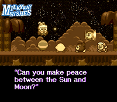 |
"Milky Way Wishes" / Jun Ishikawa / KIRBY SUPER STAR | |
| Jun Ishikawa's soundtrack for KIRBY SUPER DELUXE is unfathomably broad, and every song in it is good. This song in particular is my favorite: it's more ambient and a little sad, like knowing today's the last day you'll hang out with a friend before they go away for a while. | ||
 |
"National Park" / Go Ichinose/ Pokemon GOLD, SILVER, CRYSTAL | |
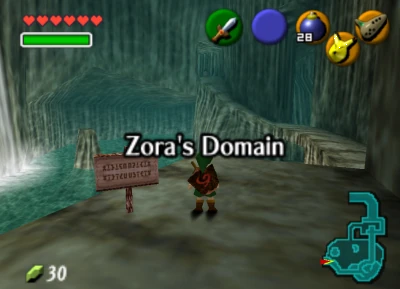 |
"Zora's Domain" / Koji Kondo / THE LEGEND OF ZELDA: THE OCARINA OF TIME | |
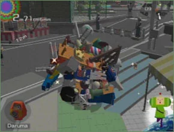 |
"Roll Me In" / Hideki Tobeta / Katamari Damacy | |
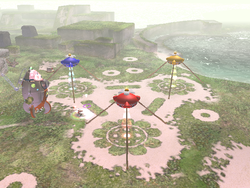 |
"The Distant Spring" / Hajime Wakai / PIKMIN | |
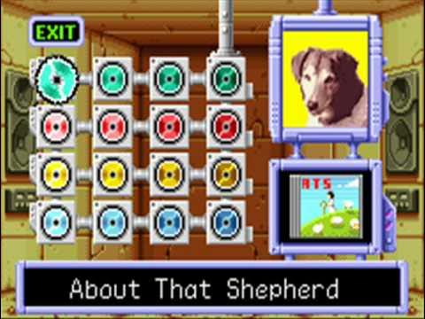 |
"About That Shepherd" / Ryoji Yoshitomi / WARIO LAND 4 | |
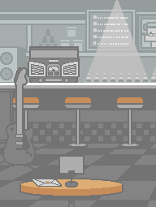 |
"Cafe" / Mitsuo Terada / RHYTHM HEAVEN (DS) | |
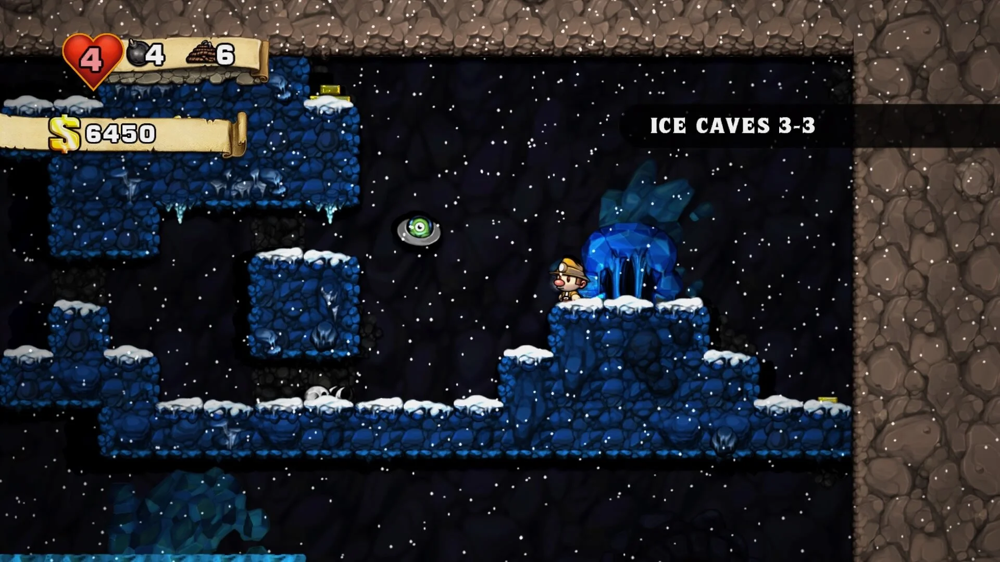 |
"Ice Caves C" / Eirik Suhrke / SPELUNKY | |
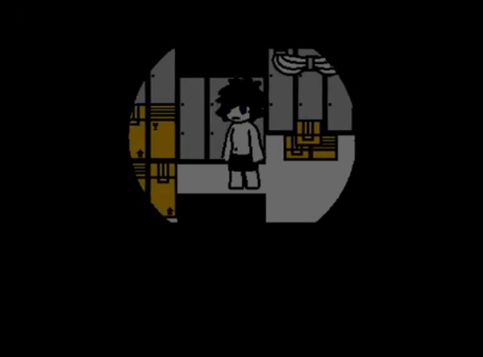 |
"Vent Pipe" / Shizi噬子 / CHANGED | |
| I started playing this game in the scariest and most uncertain point in my life: senior year of high school. It was nice to see someone who could survive, financially, off of such a simple passion project. And, also, this sounds Bachy. I like. | ||
All of these composers had different lives. They all have different faces, and
different opinions on how music should sound; how music should, shouldn't,
or doesn't effect gameplay.
I urge you to look them all up.
Videogames are the silliest artistic medium of our time. Every piece of art
is a product of the artist and the world that produced it. Video games have so
many collaborators that all have to harmonize synchroniously...
You can see now, how when a video game is made well, it reflects the human
soul in a way that is infinitely detailed and beaufitul.